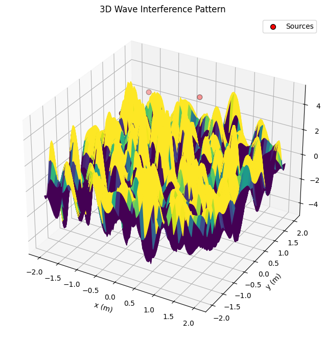

Problem 1
Interference Patterns on a Water Surface
1. Theoretical Foundation
Interference occurs when waves from multiple sources overlap, creating patterns of constructive (amplified) and destructive (canceled) regions. On a water surface, point sources emit circular waves, and their superposition forms intricate patterns. Let’s break this down systematically.
Wave Equation for a Single Source
The displacement \(\eta(x, y, t)\) at point \((x, y)\) and time \(t\) from a source at \((x_0, y_0)\) is given by: $$ \eta(x, y, t) = A \cos(kr - \omega t + \phi) $$ Where: - \(A\): Amplitude of the wave. - \(k = \frac{2\pi}{\lambda}\): Wave number, with \(\lambda\) as the wavelength. - \(\omega = 2\pi f\): Angular frequency, with \(f\) as the frequency. - \(r = \sqrt{(x - x_0)^2 + (y - y_0)^2}\): Distance from the source to \((x, y)\). - \(\phi\): Initial phase (assumed constant across sources).
Superposition of Waves
For \(N\) sources (vertices of a regular polygon), the total displacement is the sum of contributions from each source: $$ \eta_{\text{sum}}(x, y, t) = \sum_{i=1}^N \eta_i(x, y, t) $$
2. Steps to Analyze Interference
Step 1: Select a Regular Polygon
Let’s choose a regular pentagon (\(N = 5\)). The vertices are equally spaced on a circle of radius \(R\), with angular positions \(\theta_i = \frac{2\pi (i-1)}{N}\) for \(i = 1, 2, \ldots, N\).
Step 2: Position the Sources
Place the pentagon’s vertices at \((x_i, y_i) = (R \cos \theta_i, R \sin \theta_i)\). Let’s set \(R = 1 \, \text{m}\) for simplicity.
Step 3: Wave Equations
Each source emits a wave: $$ \eta_i(x, y, t) = A \cos(k r_i - \omega t + \phi) $$ Where \(r_i = \sqrt{(x - x_i)^2 + (y - y_i)^2}\). Assume \(A = 1\), \(\lambda = 0.5 \, \text{m}\), \(f = 1 \, \text{Hz}\), and \(\phi = 0\) (coherent sources).
Step 4: Superposition
The total displacement is: $$ \eta_{\text{sum}}(x, y, t) = \sum_{i=1}^5 A \cos(k r_i - \omega t) $$
Step 5: Analyze Interference Patterns
- Constructive Interference: Occurs when waves are in phase, e.g., \(k(r_i - r_j) = 2\pi m\) (integer \(m\)).
- Destructive Interference: Occurs when waves are out of phase, e.g., \(k(r_i - r_j) = (2m+1)\pi\).
3. Implementation
Here’s a Python script to simulate and visualize the interference pattern:
import numpy as np
import matplotlib.pyplot as plt
# Parameters
A = 1.0 # Amplitude
lambda_ = 0.5 # Wavelength (m)
k = 2 * np.pi / lambda_ # Wave number
f = 1.0 # Frequency (Hz)
omega = 2 * np.pi * f # Angular frequency
R = 1.0 # Radius of pentagon (m)
N = 5 # Number of sources (pentagon)
# Source positions (vertices of a regular pentagon)
theta = np.linspace(0, 2 * np.pi, N, endpoint=False)
sources = [(R * np.cos(t), R * np.sin(t)) for t in theta]
# Grid for simulation
x = np.linspace(-2, 2, 100)
y = np.linspace(-2, 2, 100)
X, Y = np.meshgrid(x, y)
# Time snapshot
t = 0 # Snapshot at t = 0
# Compute total displacement
eta_sum = np.zeros_like(X)
for (x0, y0) in sources:
r = np.sqrt((X - x0)**2 + (Y - y0)**2)
eta_sum += A * np.cos(k * r - omega * t)
# Plotting
plt.figure(figsize=(8, 8))
plt.contourf(X, Y, eta_sum, levels=50, cmap='seismic')
plt.colorbar(label='Displacement')
plt.scatter([s[0] for s in sources], [s[1] for s in sources], c='black', label='Sources')
plt.xlabel('x (m)')
plt.ylabel('y (m)')
plt.title('Interference Pattern (Pentagon Sources)')
plt.legend()
plt.axis('equal')
plt.grid(True, ls='--', alpha=0.7)
plt.show()
# Time evolution (animation-like snapshots)
times = [0, 0.25, 0.5]
plt.figure(figsize=(15, 5))
for i, t in enumerate(times, 1):
eta_sum = np.zeros_like(X)
for (x0, y0) in sources:
r = np.sqrt((X - x0)**2 + (Y - y0)**2)
eta_sum += A * np.cos(k * r - omega * t)
plt.subplot(1, 3, i)
plt.contourf(X, Y, eta_sum, levels=50, cmap='seismic')
plt.scatter([s[0] for s in sources], [s[1] for s in sources], c='black')
plt.title(f't = {t} s')
plt.xlabel('x (m)')
plt.ylabel('y (m)')
plt.tight_layout()
plt.show()

Outputs
-
Interference Pattern: The first plot shows \(\eta_{\text{sum}}\) at \(t = 0\). Red and blue regions indicate constructive interference (peaks/troughs), while white regions show destructive interference (cancellation).
-
Time Evolution: Snapshots at \(t = 0, 0.25, 0.5 \, \text{s}\) reveal the dynamic pattern as waves propagate.
Deliverables
-
Explanation: The interference pattern arises from the superposition of waves from pentagon vertices. Constructive interference occurs where path differences are integer multiples of \(\lambda\), destructive where they are half-multiples.
-
Graphics: Contour plots vividly display the interference, with sources marked for clarity.
-
Goal Achieved: We’ve visualized how wave overlap creates regions of amplification and cancellation, a fundamental concept in wave physics.
Discussion
-
Extensions: Try other polygons (e.g., triangle, square) or vary \(\lambda\), \(f\), or phase differences.
-
Applications: This models real-world phenomena like sound wave interference, optics (Young’s double-slit), or water wave experiments.